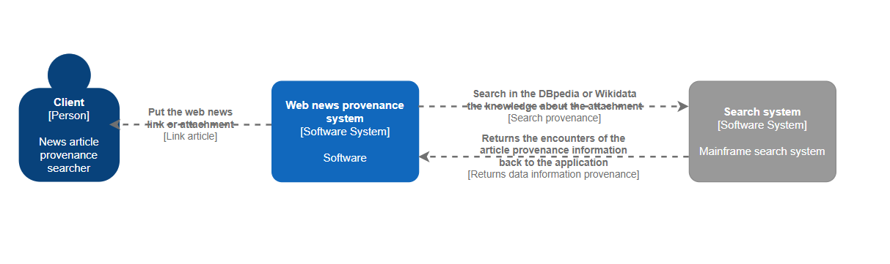
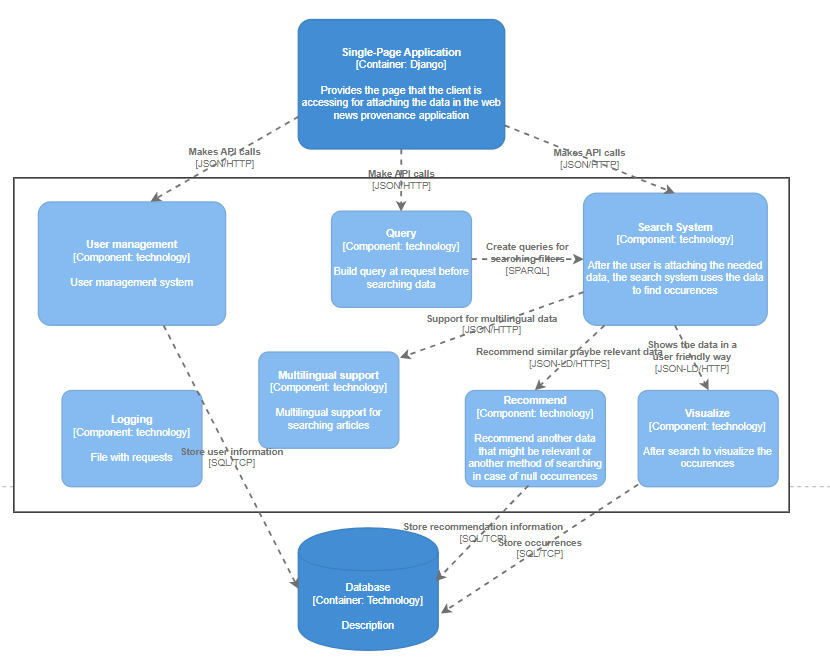

WADE Project
A web application able to model and manage using external source of searching web news provenance for an online article textual, multimedia etc. For the search source will be used DBpedia, or Wikidata, using schema.org RDFa and JSON-LD with an SPARQL endpoint.
The application is destined for persons who want to find out the provenance for a web news online article and its originality.
As programming language will be used Python and Django Framework for the development of the application.
The Django Framework uses MVT architecture pattern being the Model-View-Template, where views act like controllers. This pattern is derived from MVC(Model-View-Controller), the three levels of architecture or 3 components. The Model component stores the data that is being transmitted between Controller component and the View component. Controllers are the actions made on a specific objects and it's behaviour in certain situations. The View, is what a client sees in the web application, is the UI transmitted to the user.
The application will have the ability to let user to model the search for a web news provenance, such as query execution, visualise response and recommend new searches or similar ones.
The search will be made in DBpedia or Wikidata, and using SPARQL endpoint and JSON-LD to manage the data modelling.
The application will have different filters for finding the best occurences.
Level 1 C4 Diagram
Level 2 C4 Diagram

Level 3 C4 Diagram
API documentation
A linked json file in OpenAPI made using schema.org Article class derived from CreativeWork and PROV-O ontology
Click HERE to view JSON file in another tab
Informations tooked from: